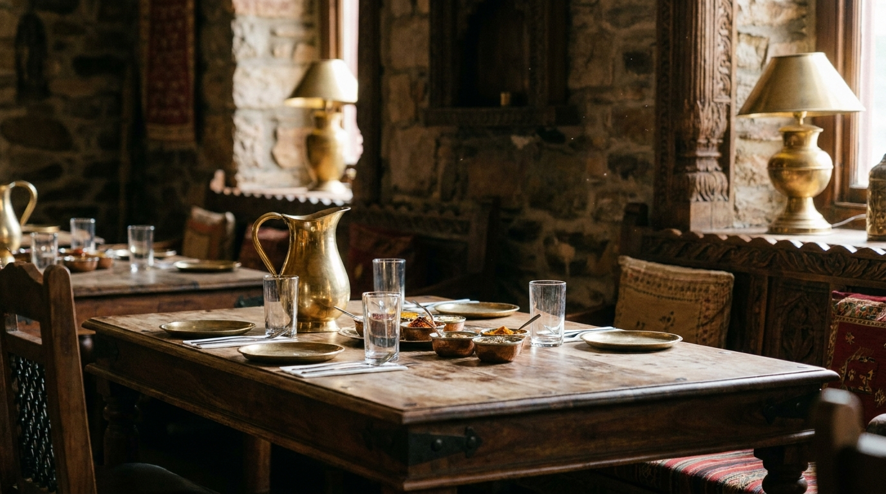

選べるカレー
複数のカレーから選べます。辛さも甘口から。とろみのある、スパイスの一皿です。
INDIAN RESTAURANT — KAMIFUKUOKA
スパイスの香る、本格インド料理。
上福岡の、小さなインド料理店です。
火〜日 11:00〜15:00 ／ 17:00〜22:30・月曜定休
※画像はイメージです
ABOUT
上福岡駅の西口から歩いて6分ほど。お店の入り口から、スパイスの良い香りが漂う本格インド料理店です。少し外国風のつくりの、こぢんまりとした店内。
カレーは複数から選べて、辛さも甘口から。ナンとライスはおかわり自由で、無くなりかけると店主さんが声をかけてくれます。「言葉の壁がありながらも、真心が伝わる丁寧な接客」——クチコミでも、そんな声の集まる、地元で愛されるお店です。

入り口から、スパイスの香り。
※画像はイメージです
SHOP INFO
| 店名 | サルタク（Sarthak） |
|---|---|
| 住所 | 埼玉県ふじみ野市西2-1-23 ロイヤルマンションC |
| アクセス | 上福岡駅 西口 徒歩約6分 |
| 営業時間 | 火〜日 11:00〜15:00 ／ 17:00〜22:30 |
| 定休日 | 月曜 |
| お支払い | 現金 |
| 電話 | 049-265-8894 |
CONTACT
ご予約・お問い合わせ、テイクアウトのご注文は、お電話でどうぞ。